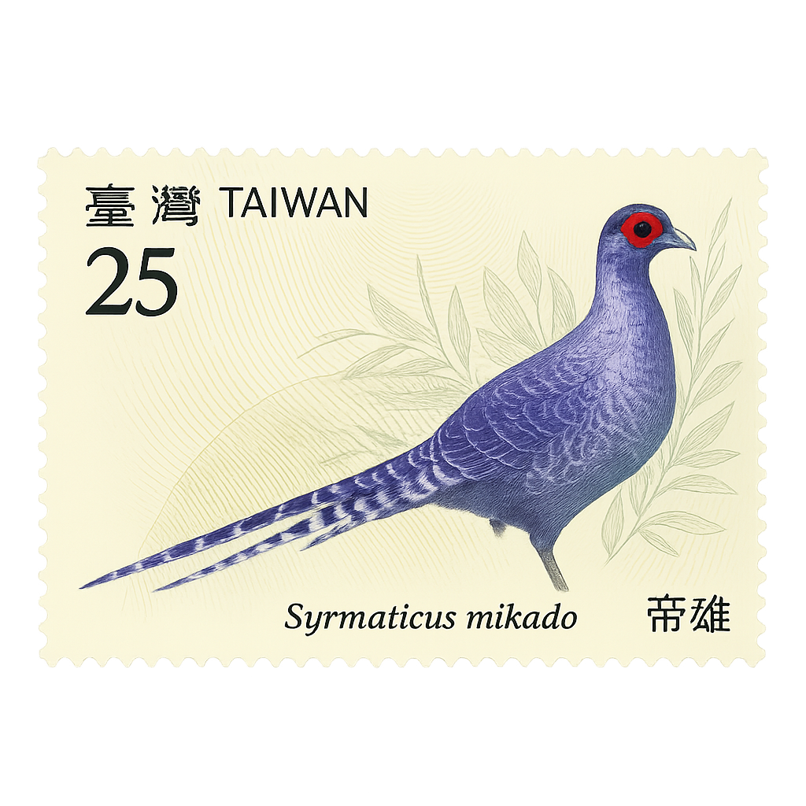

帝雉的文化意義與象徵
帝雉不僅是台灣珍稀保育類鳥種，更承載著深厚的文化意涵，是自然、生態與人文交會的象徵。
國鳥的地位
帝雉外型尊貴華麗、性格穩重內斂，象徵台灣人民堅韌與謙和的精神。因其為台灣特有種，加上在高山深林間自由穿梭，逐漸成為台灣精神象徵，並被譽為「國鳥」。
出現在日常生活中的帝雉
- 💵 千元新台幣背面： 印有帝雉與玉山圖像，代表自然與國力。
- 📮 郵票與紀念幣： 多次成為主題發行，是台灣代表性生物。
- 🎁 文創商品： 常見於明信片、鑰匙圈、抱枕等設計中。
原住民族文化中的帝雉
帝雉羽毛在原住民族群中象徵榮耀與尊貴，常用於祭典服飾與族人頭飾中，展現與自然共生的智慧。亦有部落視其為山林守護神，具有精神性象徵。
帝雉與教育推廣
多所國小將帝雉作為校鳥、校徽意象，並融入繪本、環境教育課程中，提升學童對生態保育與本土動物的認識。
帝雉的文化圖像
▲ 千元新台幣背面展示帝雉與玉山，象徵自然與國家。

▲ 帝雉作為珍稀鳥類，常見於紀念郵票與生態紀念幣中。
▲ 原住民頭飾與祭服中使用帝雉羽毛，象徵榮耀與神聖。